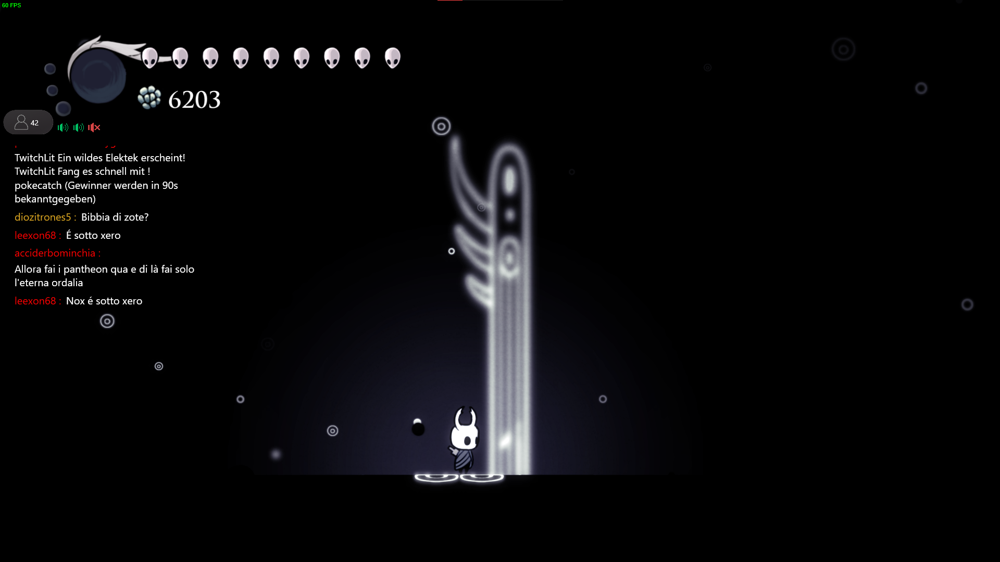

StatsLab Hub es una herramienta versátil diseñada para mejorar tu experiencia de transmisión en OBS (Open Broadcaster Software) y Twitch para personas con un solo monitor.
Con una interfaz sencilla pero completa, StatsHub te proporciona información en tiempo real sobre tus fuentes de OBS y tu canal de Twitch, todo en un único lugar.